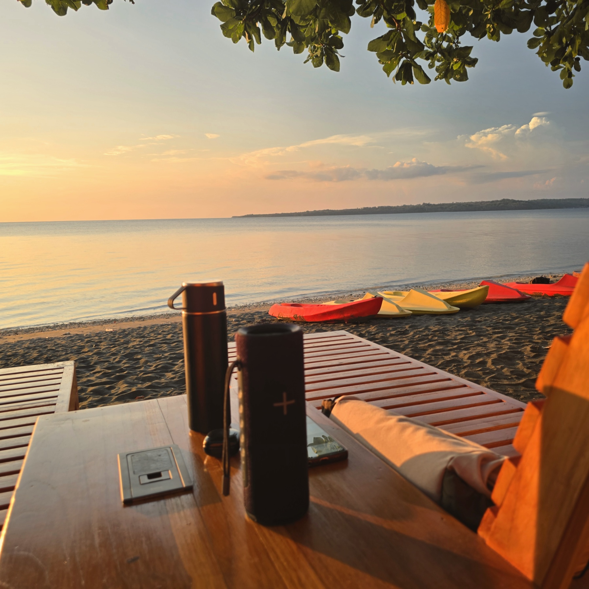
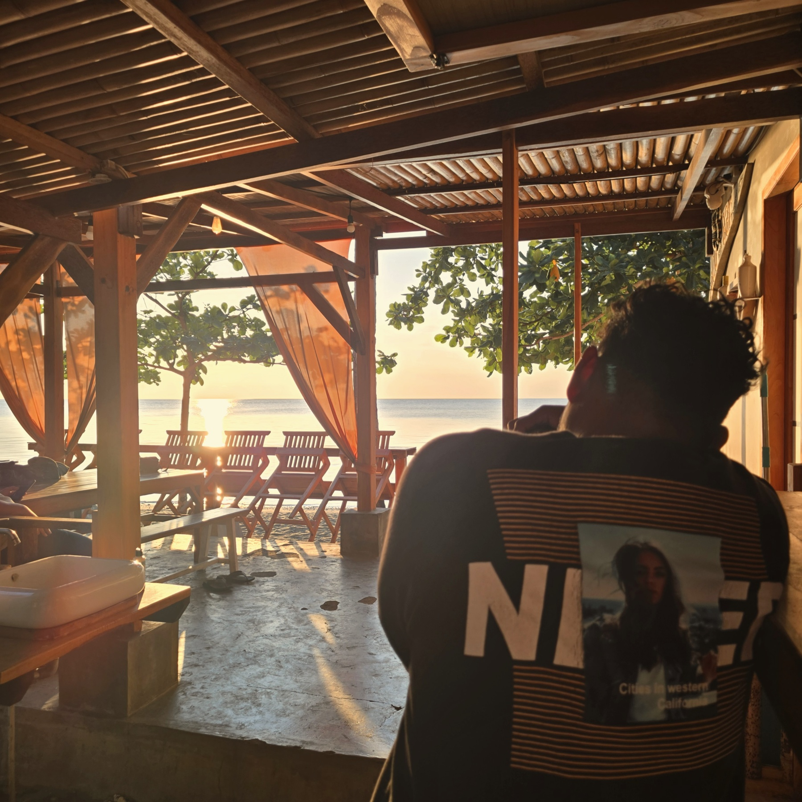
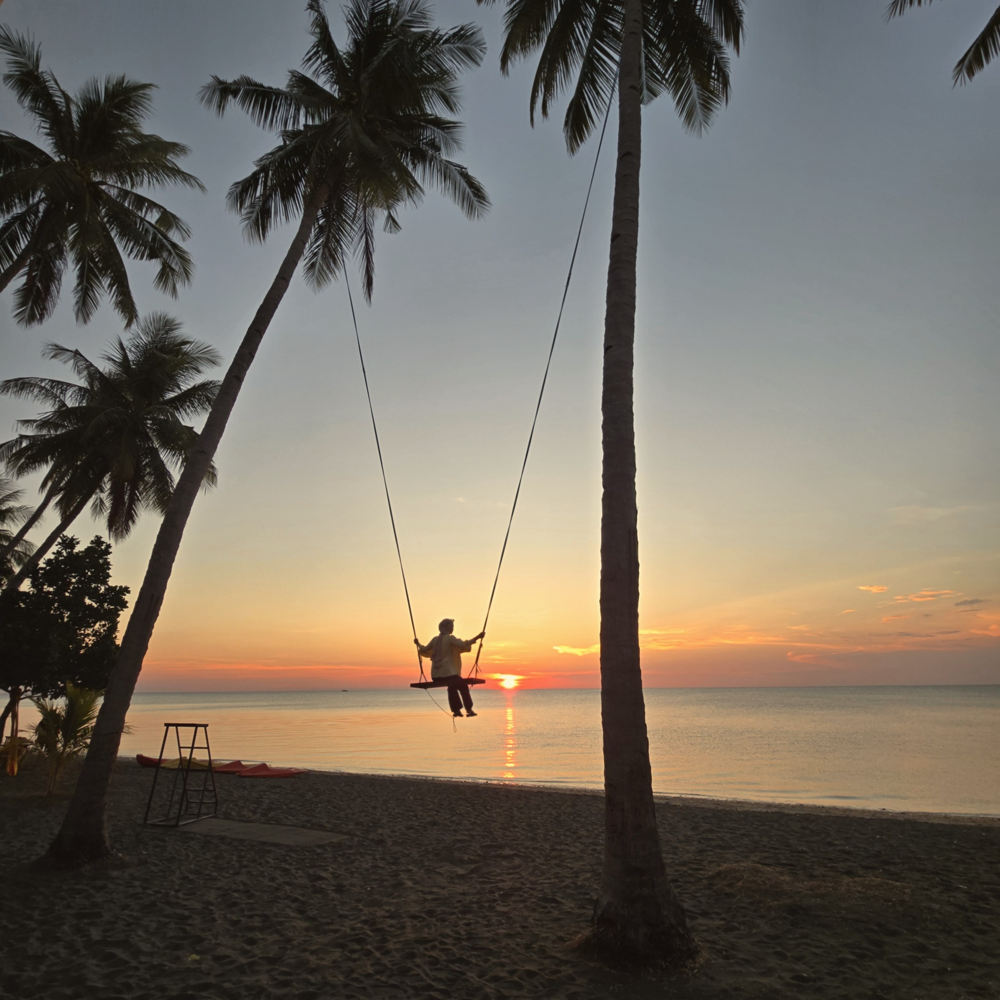
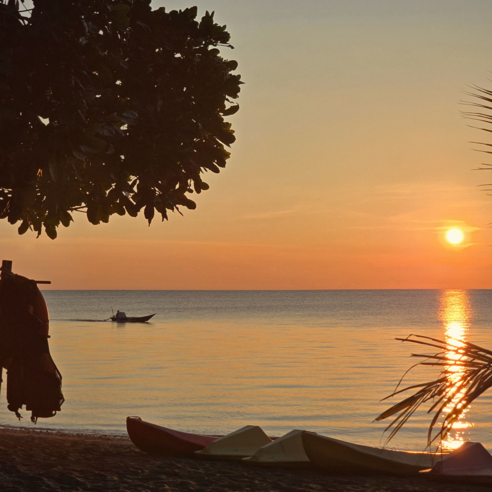

Senja hari ini · Pantai Sunari
Sore ini terlalu indah
untuk dilewatkan.
17.57WITA
Geser untuk ceritanya →


Golden hour
Meja sudah siap
Termos kopi di meja, kayak berjajar di pasir, laut masih tenang.
SunaRi · Selayar#sunarisunsetmoment02 / 14

Golden hour
Cahaya masuk ke resto
Tirai jingga mulai menyala, kursi pantai menunggu di depan.
SunaRi · Selayar#sunarisunsetmoment03 / 14
Menjelang senja
Kursi mulai terisi
Satu per satu tamu datang, minuman dingin, obrolan pelan.
SunaRi · Selayar#sunarisunsetmoment04 / 14
Menjelang senja
Cerita di meja kayu
Di bawah pohon ketapang, matahari tepat di depan mata.
SunaRi · Selayar#sunarisunsetmoment05 / 14
Menjelang senja
Duduk di balik tirai
Minuman di tangan, jalur cahaya jatuh di depan meja.
SunaRi · Selayar#sunarisunsetmoment06 / 14
Menjelang senja
Lensa siap
Kamera diarahkan ke laut, menunggu cahaya terbaik.
SunaRi · Selayar#sunarisunsetmoment07 / 14
Matahari turun
Dibantu naik ayunan
Tim SunaRi siap membantu, ayunan raksasa gratis untuk dicoba.
SunaRi · Selayar#sunarisunsetmoment08 / 14
Matahari turun
Lalu, melayang
Sejenak di udara, langit jingga di sekeliling.
SunaRi · Selayar#sunarisunsetmoment09 / 14

Matahari turun
Berayun ke arah matahari
Di antara pohon kelapa, matahari tepat di cakrawala.
SunaRi · Selayar#sunarisunsetmoment10 / 14
Matahari terbenam
Nelayan pulang
Perahu melintas pelan di jalur cahaya.
SunaRi · Selayar#sunarisunsetmoment11 / 14

Matahari terbenam
Kayak beristirahat
Pelampung digantung, kayak menunggu besok sore.
SunaRi · Selayar#sunarisunsetmoment12 / 14
Afterglow
Langit belum selesai
Matahari sudah tenggelam, jingga dan merah muda masih bertahan.
SunaRi · Selayar#sunarisunsetmoment13 / 14

Sampai jumpa besok sore
Senja berikutnya
Datang 30 menit sebelum matahari terbenam
Akhir Nov–Des: senja sekitar 18.00 WITA
Ayunan raksasa gratis, kayak bisa disewa
Ikuti jam senja harian di story kami
Info & reservasi
WhatsApp 0821-8903-3044
Pantai Sunari · Selayar
#sunarisunsetmoment